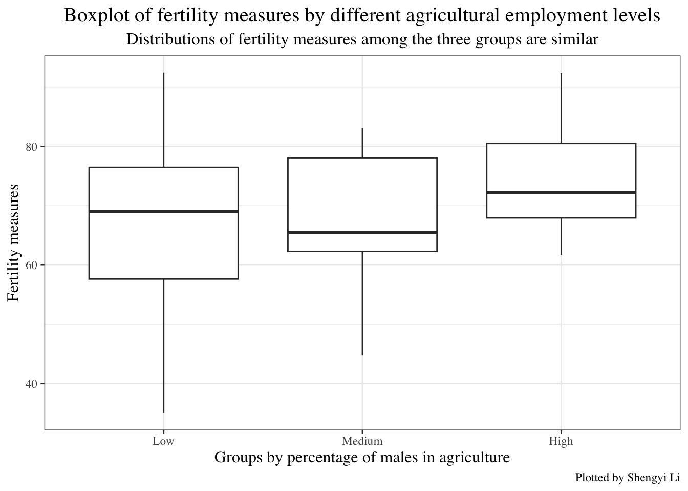

sapply(swiss, class) Fertility Agriculture Examination Education
"numeric" "numeric" "integer" "integer"
Catholic Infant.Mortality
"numeric" "numeric" I will perform a data analysis on this page using the Swiss dataset in R.

What was the association between standardized socioeconomic indicators and fertility measures across various French-speaking provinces of Switzerland around 1888?
Historian and lover of Swiss history.
This dataset contains standardized socioeconomic indicators and fertility measures for 47 Swiss French-speaking provinces in about 1888 (“R: Swiss Fertility and Socioeconomic Indicators (1888) Data” 2024). It has a high research value, as Switzerland experienced a demographic transition in 1988, during which its fertility rates started declining from the levels typical of developing countries (Mosteller 1977).
It is a built-in dataset in R, and its documentation manual is published by ETH Zurich (“R: Swiss Fertility and Socioeconomic Indicators (1888) Data” 2024).
Files containing compiled socioeconomic data for Switzerland from the years 1887, 1888, 1910, and 1930 are available here for further reference.
sapply(swiss, class) Fertility Agriculture Examination Education
"numeric" "numeric" "integer" "integer"
Catholic Infant.Mortality
"numeric" "numeric" | Variable | Class | Description |
|---|---|---|
| Fertility | Numeric | Common standardized fertility measure (scaled in [0,100]) |
| Agriculture | Numeric | Percentage of males employed in agriculture |
| Examination | Integer | Percentage of draftees achieving the highest score on the military exam |
| Education | Integer | Percentage of draftees with education beyond primary school |
| Catholic | Numeric | Percentage of Catholic |
| Infant.Mortality | Numeric | Percentage of live births surviving less than one year |
Examination and Education are averaged over the years 1887 to 1889 (“OPR Data Archive” 2024).We firts look at the summary of data.
summary(swiss) Fertility Agriculture Examination Education
Min. :35.00 Min. : 1.20 Min. : 3.00 Min. : 1.00
1st Qu.:64.70 1st Qu.:35.90 1st Qu.:12.00 1st Qu.: 6.00
Median :70.40 Median :54.10 Median :16.00 Median : 8.00
Mean :70.14 Mean :50.66 Mean :16.49 Mean :10.98
3rd Qu.:78.45 3rd Qu.:67.65 3rd Qu.:22.00 3rd Qu.:12.00
Max. :92.50 Max. :89.70 Max. :37.00 Max. :53.00
Catholic Infant.Mortality
Min. : 2.150 Min. :10.80
1st Qu.: 5.195 1st Qu.:18.15
Median : 15.140 Median :20.00
Mean : 41.144 Mean :19.94
3rd Qu.: 93.125 3rd Qu.:21.70
Max. :100.000 Max. :26.60 We notice that variables Agriculture and Catholic had large discrepancies across provinces, while others exhibited less variation.
We then investigate the association between male agricultural employment levels and fertility.
library(ggplot2)
suppressPackageStartupMessages(library(dplyr))
swiss %>% ggplot(aes(x=Agriculture)) +
geom_histogram(bins=15,fill='white',color='black')+
labs(x="Percentage of males in agriculture",
y="Count",
title = "Histogram of the Percentage of Males Employed in Agriculture",
subtitle = "The percentage varies significantly across provinces ",
caption = "Plotted by Shengyi Li")+
theme_bw(base_family = "Times")+
theme(plot.title = element_text(size=15,hjust=0.5),
plot.subtitle = element_text(hjust=0.5,size=12.5),
axis.title.x = element_text(size=12),
axis.title.y = element_text(size=12))Due to the wide range of Agriculture and similar frequencies across bins, we divided it into three categories—low, medium, and high—to examine its association with fertility.
category_data <- swiss %>%
mutate(Agriculture_group = cut(Agriculture,
breaks = quantile(Agriculture, probs = c(0, 1/3, 2/3, 1)),
labels = c("Low", "Medium","High"),
include.lowest = TRUE))category_data %>% ggplot(aes(x=Agriculture_group,y=Fertility))+
geom_boxplot()+
labs(x = "Groups by percentage of males in agriculture",
y = "Fertility measures",
color = "Agriculture_group",
title = "Boxplot of fertility measures by different agricultural employment levels",
subtitle = "Distributions of fertility measures among the three groups are similar",
caption = "Plotted by Shengyi Li")+
theme_bw(base_family = "Times")+
theme(plot.title = element_text(size=15,hjust=0.5),
plot.subtitle = element_text(hjust=0.5,size=12.5),
axis.title.x = element_text(size=12),
axis.title.y = element_text(size=12))
As the percentage of males employed in agriculture increases, the mean fertility measures remains relatively stable; however, both the first quartile (Q1) and third quartile (Q3) within each group show a gradual increase. And outliers are more evident in the group with a low percentage of males employed in agriculture.
We also examine how the percentage of males employed in agriculture affects the average infant mortality measures.
knitr::kable(
category_data %>% group_by(Agriculture_group) %>%
summarize(Mean_infant_mortality = round(mean(Infant.Mortality),2)) %>%
rename(Ag_group=Agriculture_group)%>%
arrange(desc(Mean_infant_mortality)))| Ag_group | Mean_infant_mortality |
|---|---|
| Low | 20.04 |
| Medium | 19.91 |
| High | 19.87 |
We notice that mean infant mortality was fairly similar between different agriculture groups (abbreviated as Ag_group in the table). It follows that the percentage of males in agriculture had few influences on infant mortality on average.
We then investigate the association between education levels and examination performance with fertility in different agriculture groups.
category_data %>%
ggplot(aes(x=Education,y=Fertility,color=Examination))+
geom_point(size=3)+
facet_wrap(vars(Agriculture_group))+
scale_color_gradient(low = "lightblue", high = "darkblue")+
labs(y="Fertility measure",
title = 'Scatter plot of Fertility vs Education by agriculture groups, \n Colored by Examination performance',
subtitle="Fertility measure is negatively correlated with Educ. level and examination performance",
caption = "Plotted by Shengyi Li")+
theme_bw(base_family = "Times")+
theme(plot.title = element_text(size=15,hjust=0.5),
plot.subtitle = element_text(hjust=0.5,size=12.5),
axis.title.x = element_text(size=12.5),
axis.title.y = element_text(size=12.5))We observe that, across all provinces, fertility measures were generally above 50, while education percentages were typically below 20, and the proportions of high exam scores were usually under 35. Additionally, provinces with lower education levels tended to perform worse on examinations and exhibited higher fertility measures. In groups with low percentages of males employed in agriculture, draftees were more likely to achieve the highest scores on the military exam.
dplyr package: mutate(), group_by(), summarize(), arrange(), desc(), and rename()
ggplot2 package: ggplot(), geom_point(), geom_histogram(), geom_boxplot(), and facet_wrap()